library(tidyverse)
# we set the seed to make the results of `runif()` reproducible.
set.seed(4)
# make data with 100 people, 16 steps each with a starting point of `step == 0` (i.e., 17 rows per person)
pos <- crossing(person = 1:100,
step = 0:16) %>%
# for all steps above `step == 0` simulate a `deviation`
mutate(deviation = map_dbl(step, ~if_else(. == 0, 0, runif(1, -1, 1)))) %>%
# after grouping by `person`, compute the cumulative sum of the deviations, then `ungroup()`
group_by(person) %>%
mutate(position = cumsum(deviation)) %>%
ungroup() 4 Linear Models
Linear regression is the geocentric model of applied statistics. By “linear regression”, we will mean a family of simple statistical golems that attempt to learn about the mean and variance of some measurement, using an additive combination of other measurements. Like geocentrism, linear regression can usefully describe a very large variety of natural phenomena. Like geocentrism, linear is a descriptive model that corresponds to many different process models. If we read its structure too literally, we’re likely to make mistakes. But used wisely, these little linear golems continue to be useful. (McElreath, 2015, p. 71)
4.1 Why normal distributions are normal
After laying out his soccer field coin toss shuffle premise, McElreath wrote:
It’s hard to say where any individual person will end up, but you can say with great confidence what the collection of positions will be. The distances will be distributed in approximately normal, or Gaussian, fashion. This is true even though the underlying distribution is binomial. It does this because there are so many more possible ways to realize a sequence of left-right steps that sums to zero. There are slightly fewer ways to realize a sequence that ends up one step left or right of zero, and so on, with the number of possible sequences declining in the characteristic bell curve of the normal distribution. (p. 72)
4.1.1 Normal by addition
Here’s a way to do the simulation necessary for the plot in the top panel of Figure 4.2.
That map_dbl() code within the first mutate() line might look odd. Go here to learn more about iterating with purrr::map_dbl().
We might glimpse() at the data.
glimpse(pos)Rows: 1,700
Columns: 4
$ person <int> 1, 1, 1, 1, 1, 1, 1, 1, 1, 1, 1, 1, 1, 1, 1, 1, 1, 2, 2, 2, 2, 2, 2, 2, 2, 2, 2, 2, 2, 2, 2, 2, 2, 2, 3, 3, 3,…
$ step <int> 0, 1, 2, 3, 4, 5, 6, 7, 8, 9, 10, 11, 12, 13, 14, 15, 16, 0, 1, 2, 3, 4, 5, 6, 7, 8, 9, 10, 11, 12, 13, 14, 15…
$ deviation <dbl> 0.00000000, -0.98210841, -0.41252078, -0.44525008, 0.62714843, -0.47914446, 0.44881179, 0.81218430, 0.89808044…
$ position <dbl> 0.0000000, -0.9821084, -1.3946292, -1.8398793, -1.2127308, -1.6918753, -1.2430635, -0.4308792, 0.4672012, -0.3…Here’s the actual plot code.
ggplot(data = pos,
aes(x = step, y = position, group = person)) +
geom_vline(xintercept = c(4, 8, 16), linetype = 2) +
geom_line(aes(color = person < 2, alpha = person < 2)) +
scale_color_manual(values = c("skyblue4", "black")) +
scale_alpha_manual(values = c(1/5, 1)) +
scale_x_continuous("step number", breaks = c(0, 4, 8, 12, 16)) +
theme(legend.position = "none")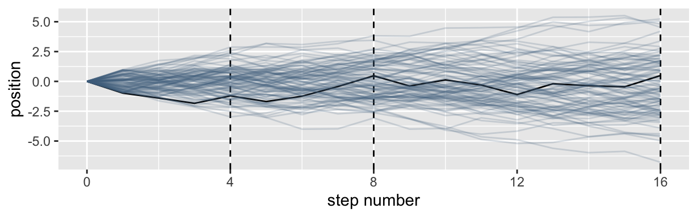
Now here’s the code for the bottom three plots of Figure 4.2.
# Figure 4.2.a.
p1 <- pos %>%
filter(step == 4) %>%
ggplot(aes(x = position)) +
geom_line(stat = "density", color = "dodgerblue1") +
coord_cartesian(xlim = c(-6, 6)) +
labs(title = "4 steps")
# Figure 4.2.b.
p2 <- pos %>%
filter(step == 8) %>%
ggplot(aes(x = position)) +
geom_density(color = "dodgerblue2") +
coord_cartesian(xlim = c(-6, 6)) +
labs(title = "8 steps")
# this is an intermediary step to get an SD value
pos %>%
filter(step == 16) %>%
summarise(sd = sd(position))# A tibble: 1 × 1
sd
<dbl>
1 2.36# Figure 4.2.c.
p3 <- pos %>%
filter(step == 16) %>%
ggplot(aes(x = position)) +
stat_function(fun = dnorm,
args = list(mean = 0, sd = 2.180408),
linetype = 2) + # 2.180408 came from the previous code block
geom_density(color = "transparent", fill = "dodgerblue3", alpha = 1/2) +
coord_cartesian(xlim = c(-6, 6)) +
labs(title = "16 steps",
y = "density")
library(patchwork)
# combine the ggplots
p1 | p2 | p3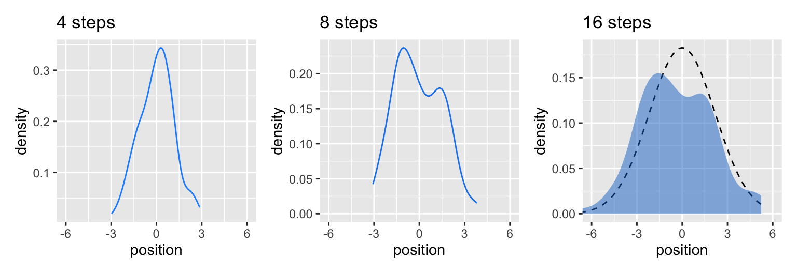
While we were at it, we explored a few ways to express densities. The main action was with the geom_line(), geom_density(), and stat_function() functions, respectively.
Any process that ads together random values from the same distribution converges to a normal. But it’s not easy to grasp why addition should result in a bell curve of sums. Here’s a conceptual way to think of the process. Whatever the average value of the source distribution, each sample from it can be thought of as a fluctuation from the average value. When we begin to add these fluctuations together, they also begin to cancel one another out. A large positive fluctuation will cancel a large negative one. The more terms in the sum, the more chances for each fluctuation to be canceled by another, or by a series of smaller ones in the opposite direction. So eventually the most likely sum, in the sense that there are the most ways to realize it, will be a sum in which every fluctuation is canceled by another, a sum of zero (relative to the mean). (pp. 73–74)
4.1.2 Normal by multiplication
Here’s McElreath’s simple random growth rate.
set.seed(4)
prod(1 + runif(12, 0, 0.1))[1] 1.774719In the runif() part of that code, we generated 12 random draws from the uniform distribution with bounds \([0, 0.1]\). Within the prod() function, we first added 1 to each of those values and then computed their product. Consider a more explicit variant of the code.
set.seed(4)
tibble(a = 1,
b = runif(12, 0, 0.1)) %>%
mutate(c = a + b) %>%
summarise(p = prod(c))# A tibble: 1 × 1
p
<dbl>
1 1.77Same result. Rather than using base R replicate() to do this many times, let’s practice with purrr::map_dbl() like before.
set.seed(4)
growth <- tibble(growth = map_dbl(1:10000, ~ prod(1 + runif(12, 0, 0.1))))
ggplot(data = growth, aes(x = growth)) +
geom_density()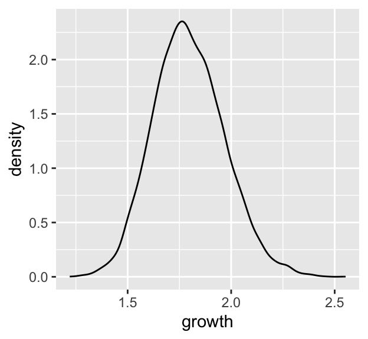
“The smaller the effect of each locus, the better this additive approximation will be” (p. 74). Let’s compare big and small.
# simulate
set.seed(4)
samples <- tibble(big = map_dbl(1:10000, ~ prod(1 + runif(12, 0, 0.5))),
small = map_dbl(1:10000, ~ prod(1 + runif(12, 0, 0.01)))) %>%
# wrangle
gather(distribution, samples)
# plot
samples %>%
ggplot(aes(x = samples)) +
geom_density(fill = "black", color = "transparent") +
facet_wrap(~distribution, scales = "free") 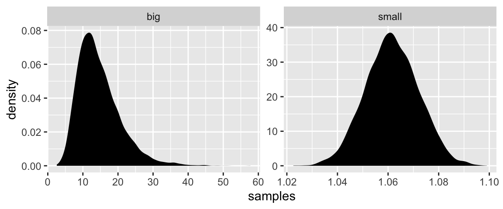
Yep, the small samples were more Gaussian.
4.1.3 Normal by log-multiplication
Instead of saving our tibble, we’ll just feed it directly into our plot.
set.seed(4)
tibble(samples = map_dbl(1:1e4, ~ log(prod(1 + runif(12, 0, 0.5))))) %>%
ggplot(aes(x = samples)) +
geom_density(color = "transparent",
fill = "gray33")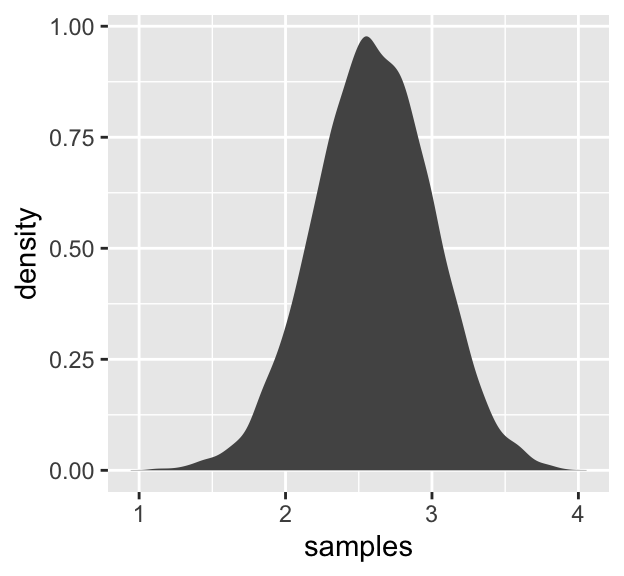
What we did was really compact. Walking it out a bit, here’s what we all did within the second argument within map_dbl() (i.e., everything within log()).
tibble(a = runif(12, 0, 0.5),
b = 1) %>%
mutate(c = a + b) %>%
summarise(p = prod(c) %>% log())# A tibble: 1 × 1
p
<dbl>
1 2.82And based on the first argument within map_dbl(), we did that 10,000 times, after which we converted the results to a tibble and then fed those data into ggplot2. Anyway, “we get the Gaussian distribution back, because adding logs is equivalent to multiplying the original numbers. So even multiplicative interactions of large deviations can produce Gaussian distributions, once we measure the outcomes on the log scale” (p. 75).
4.1.4 Using Gaussian distributions
I really like the justifications in the following subsections.
4.1.4.1 Ontological justification
The Gaussian is
a widespread pattern, appearing again and again at different scales and in different domains. Measurement errors, variations in growth, and the velocities of molecules all tend towards Gaussian distributions. These processes do this because at their heart, these processes add together fluctuations. And repeatedly adding finite fluctuations results in a distribution of sums that have shed all information about the underlying process, aside from mean and spread.
One consequence of this is that statistical models based on Gaussian distributions cannot reliably identify micro-process. (p. 75)
But they can still be useful.
4.1.4.2 Epistemological justification
Another route to justifying the Gaussian as our choice of skeleton, and a route that will help us appreciate later why it is often a poor choice, is that it represents a particular state of ignorance. When all we know or are willing to say about a distribution of measures (measures are continuous values on the real number line) is their mean and variance, then the Gaussian distribution arises as the most consistent with our assumptions.
That is to say that the Gaussian distribution is the most natural expression of our state of ignorance, because if all we are willing to assume is that a measure has finite variance, the Gaussian distribution is the shape that can be realized in the largest number of ways and does not introduce any new assumptions. It is the least surprising and least informative assumption to make. In this way, the Gaussian is the distribution most consistent with our assumptions… If you don’t think the distribution should be Gaussian, then that implies that you know something else that you should tell your golem about, something that would improve inference. (pp. 75–76)
4.1.4.3 Overthinking: Gaussian distribution
Let \(y\) be the criterion, \(\mu\) be the mean, and \(\sigma\) be the standard deviation. Then the probability density of some Gaussian value \(y\) is
\[p(y \mid \mu, \sigma) = \frac{1}{\sqrt{2 \pi \sigma^2}} \exp \left (- \frac{(y - \mu)^2}{2 \sigma^2} \right).\]
McElreath’s right. “This looks monstrous” (p. 76). Why not demystify that monster with a little R code? For simplicity, we’ll look at \(p(y)\) over a series of \(y\) values ranging from -4 to 4, holding \(\mu = 0\) and \(\sigma = 1\). Then we’ll plot.
# define our input values
tibble(y = seq(from = -4, to = 4, by = .1),
mu = 0,
sigma = 1) %>%
# compute p(y) using a hand-made Gaussian likelihood
mutate(p_y = (1 / sqrt(2 * pi * sigma^2)) * exp(-(y - mu)^2 / (2 * sigma^2))) %>%
# plot!
ggplot(aes(x = y, y = p_y)) +
geom_line() +
ylab(expression(italic(p)(italic("y|")*mu==0*","~sigma==1)))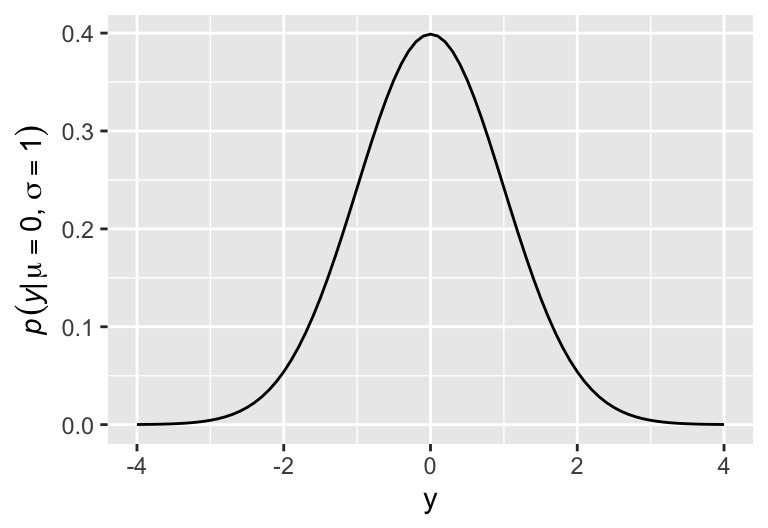
You get the same results is you switch out that mutate line with mutate(p_y = dnorm(y)) %>%. To learn more, execute ?dnorm.
4.2 A language for describing models
Our mathy ways of summarizing models will be something like
\[\begin{align*} \text{criterion}_i & \sim \operatorname{Normal}(\mu_i, \sigma) \\ \mu_i & = \beta \times \text{predictor}_i \\ \beta & \sim \operatorname{Normal}(0, 10) \\ \sigma & \sim \operatorname{HalfCauchy}(0, 1). \end{align*}\]
And as McElreath then followed up with, “If that doesn’t make much sense, good. That indicates that you are holding the right textbook” (p. 77). Welcome applied statistics!
4.2.1 Re-describing the globe tossing model
For the globe tossing model, the probability \(p\) of a count of water \(w\) based on \(n\) trials was
\[\begin{align*} w & \sim \operatorname{Binomial}(n, p) \\ p & \sim \operatorname{Uniform}(0, 1). \end{align*}\]
We can break McElreath’s R code 4.6 down a little bit with a tibble like so.
# how many `p_grid` points would you like?
n_points <- 100
d <- tibble(p_grid = seq(from = 0, to = 1, length.out = n_points),
w = 6,
n = 9) %>%
mutate(prior = dunif(p_grid, 0, 1),
likelihood = dbinom(w, n, p_grid)) %>%
mutate(posterior = likelihood * prior / sum(likelihood * prior))
head(d)# A tibble: 6 × 6
p_grid w n prior likelihood posterior
<dbl> <dbl> <dbl> <dbl> <dbl> <dbl>
1 0 6 9 1 0 0
2 0.0101 6 9 1 8.65e-11 8.74e-12
3 0.0202 6 9 1 5.37e- 9 5.43e-10
4 0.0303 6 9 1 5.93e- 8 5.99e- 9
5 0.0404 6 9 1 3.23e- 7 3.26e- 8
6 0.0505 6 9 1 1.19e- 6 1.21e- 7In case you were curious, here’s what they look like.
d %>%
select(-w, -n) %>%
gather(key, value, -p_grid) %>%
# this line allows us to dictate the order the panels will appear in
mutate(key = factor(key, levels = c("prior", "likelihood", "posterior"))) %>%
ggplot(aes(x = p_grid, y = value, fill = key)) +
geom_area() +
scale_fill_manual(values = c("blue", "red", "purple")) +
scale_y_continuous(NULL, breaks = NULL) +
theme(legend.position = "none") +
facet_wrap(~key, scales = "free")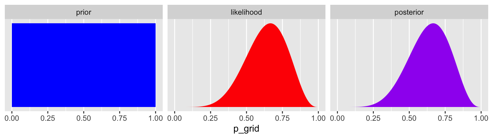
The posterior is a combination of the prior and the likelihood. When the prior is flat across the parameter space, the posterior is just the likelihood re-expressed as a probability. As we go along, you’ll see that we almost never use flat priors in practice.
4.3 A Gaussian model of height
There are an infinite number of possible Gaussian distributions. Some have small means. Others have large means. Some are wide, with a large \(\sigma\). Others are narrow. We want our Bayesian machine to consider every possible distribution, each defined by a combination of \(\mu\) and \(\sigma\), and rank them by posterior plausibility. (p. 79)
4.3.1 The data
Let’s get the Howell (2001, 2010) data from McElreath’s (2020) rethinking package.
library(rethinking)
data(Howell1)
d <- Howell1Here we open our main statistical package, Bürkner’s brms. But before we do, we’ll want to detach the rethinking package. R will not allow users to use a function from one package that shares the same name as a different function from another package if both packages are open at the same time. The rethinking and brms packages are designed for similar purposes and, unsurprisingly, overlap in the names of their functions. To prevent problems, it is a good idea to make sure rethinking is detached before using brms. To learn more on the topic, see this R-bloggers post.
rm(Howell1)
detach(package:rethinking, unload = T)
library(brms)Go ahead and investigate the data with str(), the tidyverse analogue for which is glimpse().
d %>%
str()'data.frame': 544 obs. of 4 variables:
$ height: num 152 140 137 157 145 ...
$ weight: num 47.8 36.5 31.9 53 41.3 ...
$ age : num 63 63 65 41 51 35 32 27 19 54 ...
$ male : int 1 0 0 1 0 1 0 1 0 1 ...Here are the height values.
d %>%
select(height) %>%
head() height
1 151.765
2 139.700
3 136.525
4 156.845
5 145.415
6 163.830We can use filter() to make an adults-only data frame.
d2 <- d %>%
filter(age >= 18)There are a lot of ways we can make sure our d2 has 352 rows. Here’s one.
d2 %>%
count() n
1 3524.3.1.1 Overthinking: Data frames
This probably reflects my training history, but the structure of a data frame seems natural and inherently appealing, to me. So I can’t relate to the “annoying” comment. But if you’re in the other camp, do check out either of these two data wrangling talks (here and here) by the ineffable Jenny Bryan.
4.3.1.2 Overthinking: Index magic
For more on indexing, check out Chapter 9 of Peng’s (2022) text, R programming for data science, or even the Subsetting subsection from R4DS.
4.3.2 The model
The likelihood for our model is
\[h_i \sim \operatorname{Normal}(\mu, \sigma),\]
our \(\mu\) prior will be
\[\mu \sim \operatorname{Normal}(178, 20),\]
and our prior for \(\sigma\) will be
\[\sigma \sim \operatorname{Uniform}(0, 50).\]
Here’s the shape of the prior for \(\mu\) in \(N(178, 20)\).
ggplot(data = tibble(x = seq(from = 100, to = 250, by = .1)),
aes(x = x, y = dnorm(x, mean = 178, sd = 20))) +
geom_line() +
ylab("density")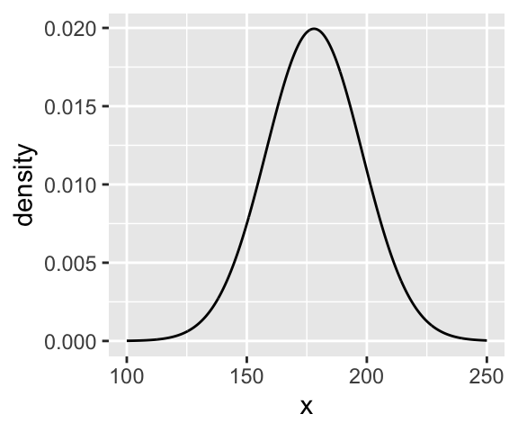
And here’s the ggplot2 code for our prior for \(\sigma\), a uniform distribution with a minimum value of 0 and a maximum value of 50. We don’t really need the y axis when looking at the shapes of a density, so we’ll just remove it with scale_y_continuous().
tibble(x = seq(from = -10, to = 60, by = .1)) %>%
ggplot(aes(x = x, y = dunif(x, min = 0, max = 50))) +
geom_line() +
scale_y_continuous(NULL, breaks = NULL) +
theme(panel.grid = element_blank())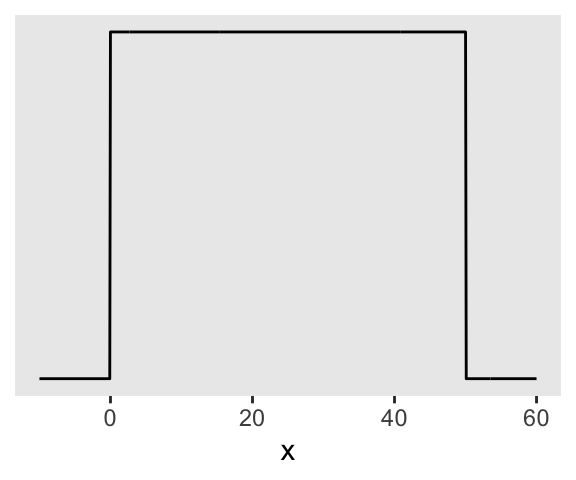
We can simulate from both priors at once to get a prior probability distribution of heights.
n <- 1e4
set.seed(4)
tibble(sample_mu = rnorm(n, mean = 178, sd = 20),
sample_sigma = runif(n, min = 0, max = 50)) %>%
mutate(x = rnorm(n, mean = sample_mu, sd = sample_sigma)) %>%
ggplot(aes(x = x)) +
geom_density(fill = "black", linewidth = 0) +
scale_y_continuous(NULL, breaks = NULL) +
labs(subtitle = expression(Prior~predictive~distribution~"for"~italic(h[i])),
x = NULL) +
theme(panel.grid = element_blank())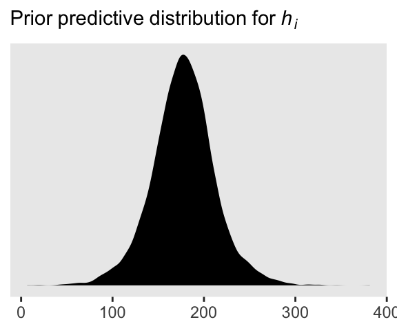
As McElreath wrote, we’ve made a “vaguely bell-shaped density with thick tails. It is the expected distribution of heights, averaged over the prior” (p. 83).
4.3.3 Grid approximation of the posterior distribution
As McElreath explained, you’ll never use the grid approximation approach for practical data analysis. But I found this helped me better understanding what exactly we’re doing with Bayesian estimation. So let’s play along. This is our version of the first three lines in McElreath’s R code 4.14.
n <- 200
# we'll accomplish with `tidyr::crossing()` what McElreath did with base R `expand.grid()`
d_grid <- crossing(mu = seq(from = 140, to = 160, length.out = n),
sigma = seq(from = 4, to = 9, length.out = n))
glimpse(d_grid)Rows: 40,000
Columns: 2
$ mu <dbl> 140, 140, 140, 140, 140, 140, 140, 140, 140, 140, 140, 140, 140, 140, 140, 140, 140, 140, 140, 140, 140, 140, 140,…
$ sigma <dbl> 4.000000, 4.025126, 4.050251, 4.075377, 4.100503, 4.125628, 4.150754, 4.175879, 4.201005, 4.226131, 4.251256, 4.27…d_grid contains every combination of mu and sigma across their specified values. Instead of base R sapply(), we’ll do the computations by making a custom function which we’ll plug into purrr::map2().
grid_function <- function(mu, sigma) {
dnorm(d2$height, mean = mu, sd = sigma, log = T) %>%
sum()
}Now we’re ready to complete the tibble.
d_grid <- d_grid %>%
mutate(log_likelihood = map2(mu, sigma, grid_function)) %>%
unnest(log_likelihood) %>%
mutate(prior_mu = dnorm(mu, mean = 178, sd = 20, log = T),
prior_sigma = dunif(sigma, min = 0, max = 50, log = T)) %>%
mutate(product = log_likelihood + prior_mu + prior_sigma) %>%
mutate(probability = exp(product - max(product)))
head(d_grid)# A tibble: 6 × 7
mu sigma log_likelihood prior_mu prior_sigma product probability
<dbl> <dbl> <dbl> <dbl> <dbl> <dbl> <dbl>
1 140 4 -3813. -5.72 -3.91 -3822. 0
2 140 4.03 -3778. -5.72 -3.91 -3787. 0
3 140 4.05 -3743. -5.72 -3.91 -3753. 0
4 140 4.08 -3709. -5.72 -3.91 -3719. 0
5 140 4.10 -3676. -5.72 -3.91 -3686. 0
6 140 4.13 -3644. -5.72 -3.91 -3653. 0In the final d_grid, the probability vector contains the posterior probabilities across values of mu and sigma. We can make a contour plot with geom_contour().
d_grid %>%
ggplot(aes(x = mu, y = sigma, z = probability)) +
geom_contour() +
labs(x = expression(mu),
y = expression(sigma)) +
coord_cartesian(xlim = range(d_grid$mu),
ylim = range(d_grid$sigma)) +
theme(panel.grid = element_blank())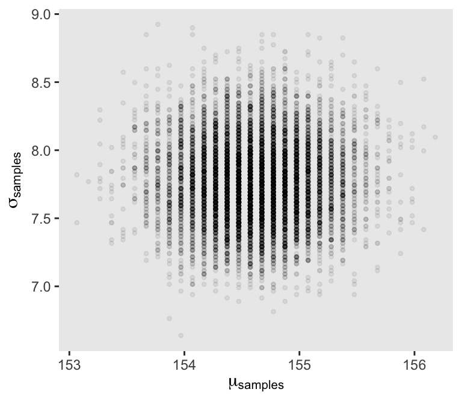
We’ll make our heat map with geom_raster(aes(fill = probability)).
d_grid %>%
ggplot(aes(x = mu, y = sigma)) +
geom_raster(aes(fill = probability),
interpolate = T) +
scale_fill_viridis_c(option = "A") +
labs(x = expression(mu),
y = expression(sigma)) +
theme(panel.grid = element_blank())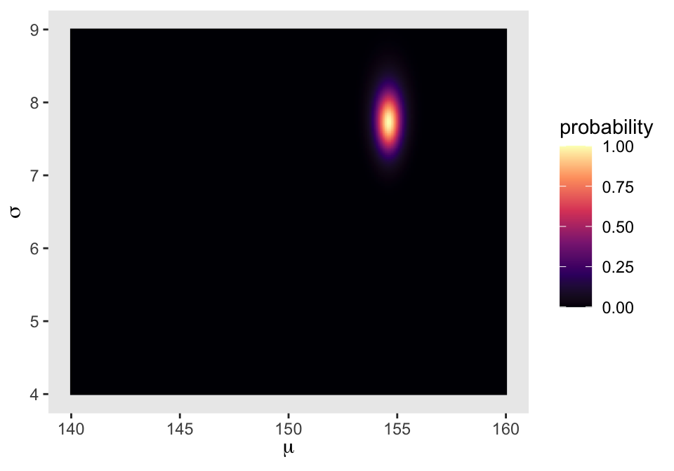
4.3.4 Sampling from the posterior
We can use dplyr::sample_n() to sample rows, with replacement, from d_grid.
set.seed(4)
d_grid_samples <- d_grid %>%
sample_n(size = 1e4, replace = T, weight = probability)
d_grid_samples %>%
ggplot(aes(x = mu, y = sigma)) +
geom_point(size = 0.9, alpha = 1/15) +
scale_fill_viridis_c() +
labs(x = expression(mu[samples]),
y = expression(sigma[samples])) +
theme(panel.grid = element_blank())We can use gather() and then facet_warp() to plot the densities for both mu and sigma at once.
d_grid_samples %>%
select(mu, sigma) %>%
gather() %>%
ggplot(aes(x = value)) +
geom_density(fill = "grey33", linewidth = 0) +
scale_y_continuous(NULL, breaks = NULL) +
xlab(NULL) +
theme(panel.grid = element_blank()) +
facet_wrap(~key, scales = "free")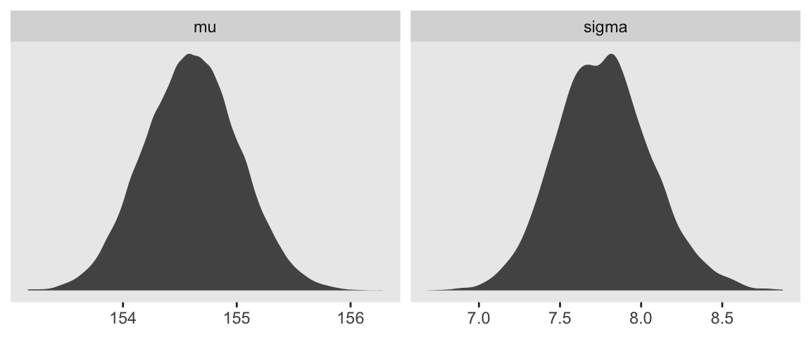
We’ll use the tidybayes package to compute their posterior modes and 95% HDIs.
library(tidybayes)
d_grid_samples %>%
select(mu, sigma) %>%
gather() %>%
group_by(key) %>%
mode_hdi(value)# A tibble: 2 × 7
key value .lower .upper .width .point .interval
<chr> <dbl> <dbl> <dbl> <dbl> <chr> <chr>
1 mu 155. 154. 155. 0.95 mode hdi
2 sigma 7.82 7.19 8.35 0.95 mode hdi Let’s say you wanted their posterior medians and 50% quantile-based intervals, instead. Just switch out the last line for median_qi(value, .width = .5).
4.3.4.1 Overthinking: Sample size and the normality of \(\sigma\)’s posterior
Since we’ll be fitting models with brms almost exclusively from here on out, this section is largely moot. But we’ll do it anyway for the sake of practice. I’m going to break the steps up like before rather than compress the code together. Here’s d3.
set.seed(4)
(d3 <- sample(d2$height, size = 20)) [1] 147.3200 154.9400 168.9100 156.8450 165.7350 151.7650 165.7350 156.2100 144.7800 154.9400 151.1300 147.9550 149.8600 162.5600
[15] 161.9250 164.4650 160.9852 151.7650 163.8300 149.8600For our first step using d3, we’ll redefine d_grid.
n <- 200
# note we've redefined the ranges of `mu` and `sigma`
d_grid <- crossing(mu = seq(from = 150, to = 170, length.out = n),
sigma = seq(from = 4, to = 20, length.out = n))Second, we’ll redefine our custom grid_function() function to operate over the height values of d3.
grid_function <- function(mu, sigma) {
dnorm(d3, mean = mu, sd = sigma, log = T) %>%
sum()
}Now we’ll use the amended grid_function() to make the posterior.
d_grid <- d_grid %>%
mutate(log_likelihood = map2_dbl(mu, sigma, grid_function)) %>%
mutate(prior_mu = dnorm(mu, mean = 178, sd = 20, log = T),
prior_sigma = dunif(sigma, min = 0, max = 50, log = T)) %>%
mutate(product = log_likelihood + prior_mu + prior_sigma) %>%
mutate(probability = exp(product - max(product)))Did you catch our use of purrr::map2_dbl(), there, in place of purrr::map2()? It turns out that purrr::map() and purrr::map2() always return a list (see here and here). However, we can add the _dbl suffix to those functions, which will instruct the purrr package to return a double vector (i.e., a common kind of numeric vector). The advantage of that approach is we no longer need to follow our map() or map2() lines with unnest(). To learn more about the ins and outs of the map() family, check out this section from R4DS or Jenny Bryan’s purrr tutorial.
Next we’ll sample_n() and plot.
set.seed(4)
d_grid_samples <- d_grid %>%
sample_n(size = 1e4, replace = T, weight = probability)
d_grid_samples %>%
ggplot(aes(x = mu, y = sigma)) +
geom_point(size = 0.9, alpha = 1/15) +
scale_fill_viridis_c() +
labs(x = expression(mu[samples]),
y = expression(sigma[samples])) +
theme(panel.grid = element_blank())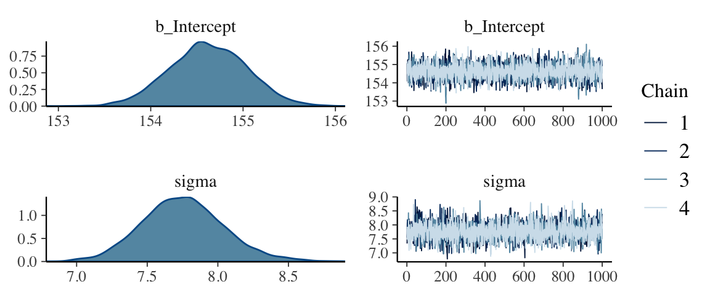
Behold the updated densities.
d_grid_samples %>%
select(mu, sigma) %>%
gather() %>%
ggplot(aes(x = value)) +
geom_density(fill = "grey33", linewidth = 0) +
scale_y_continuous(NULL, breaks = NULL) +
xlab(NULL) +
theme(panel.grid = element_blank()) +
facet_wrap(~key, scales = "free", labeller = label_parsed)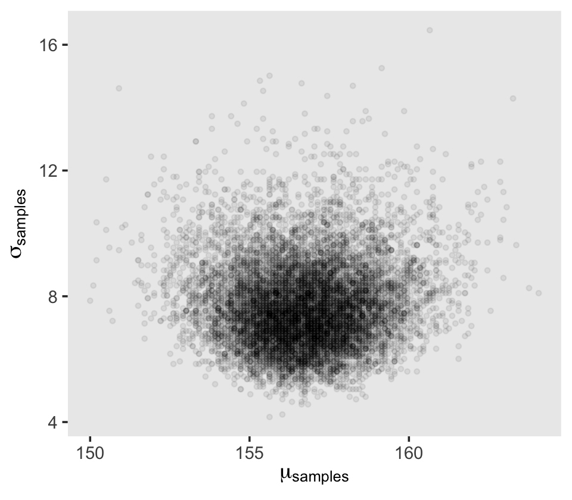
That labeller = label_parsed bit in the facet_wrap() function is what converted our subplot strip labels into Greek. Anyway, \(\sigma\) is not so Gaussian with that small \(n\).
This is the point in the project where we hop off the grid-approximation train. On the one hand, I think this is a great idea. Most of y’all reading this will never use grid approximation in a real-world applied data analysis. On the other hand, there is some pedagogical utility in practicing with it. It can help you grasp what it is we’re dong when we apply Bayes’ theorem. If you’d like more practice, check out the first several chapters in John Kruschke’s (2015) textbook and the corresponding chapters in my (2026) ebook translating it into brms and tidyverse.
4.3.5 Fitting the model with mapbrm()
mapWe won’t actually use rethinking::map()–which you should not conflate with purrr::map()–, but will jump straight to the primary brms modeling function, brm(). In the text, McElreath indexed his models with names like m4.1. I will largely follow that convention, but will replace the m with a b to stand for the brms package. Plus, once in a blue moon we will actually use the rethinking package to fit a model in order to contrast it to one fit with brms. On those occasions, we will index them using the m prefix. Here’s the first model with brm().
b4.1 <- brm(
data = d2,
family = gaussian,
height ~ 1,
prior = c(prior(normal(178, 20), class = Intercept),
prior(uniform(0, 50), class = sigma, ub = 50)),
iter = 2000, warmup = 1000, chains = 4, cores = 4,
seed = 4,
file = "fits/b04.01")After running model fit with HMC, it’s a good idea to inspect the chains. As we’ll see, McElreath covered this in Section 8.3.6. Here’s a typical way to do so with brms.
plot(b4.1) 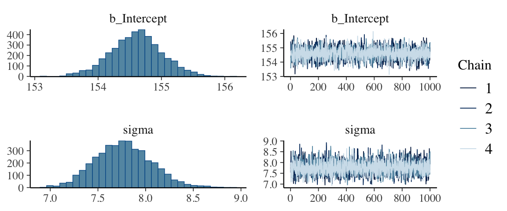
If you want detailed diagnostics for the HMC chains, execute launch_shinystan(b4.1). It’ll keep you busy for a while. But anyway, the chains look good. We can reasonably trust the results.
Here’s how to get the model summary of our brm() object.
print(b4.1) Family: gaussian
Links: mu = identity
Formula: height ~ 1
Data: d2 (Number of observations: 352)
Draws: 4 chains, each with iter = 2000; warmup = 1000; thin = 1;
total post-warmup draws = 4000
Regression Coefficients:
Estimate Est.Error l-95% CI u-95% CI Rhat Bulk_ESS Tail_ESS
Intercept 154.61 0.40 153.79 155.41 1.00 3654 2340
Further Distributional Parameters:
Estimate Est.Error l-95% CI u-95% CI Rhat Bulk_ESS Tail_ESS
sigma 7.77 0.29 7.23 8.38 1.00 3901 3112
Draws were sampled using sampling(NUTS). For each parameter, Bulk_ESS
and Tail_ESS are effective sample size measures, and Rhat is the potential
scale reduction factor on split chains (at convergence, Rhat = 1).The summary() function works in a similar way. You can also get a Stan-like summary like this.
b4.1$fitInference for Stan model: anon_model.
4 chains, each with iter=2000; warmup=1000; thin=1;
post-warmup draws per chain=1000, total post-warmup draws=4000.
mean se_mean sd 2.5% 25% 50% 75% 97.5% n_eff Rhat
b_Intercept 154.61 0.01 0.40 153.79 154.34 154.61 154.87 155.41 3633 1
sigma 7.77 0.00 0.29 7.23 7.56 7.76 7.96 8.38 3936 1
Intercept 154.61 0.01 0.40 153.79 154.34 154.61 154.87 155.41 3633 1
lprior -8.51 0.00 0.02 -8.56 -8.53 -8.51 -8.50 -8.46 3636 1
lp__ -1227.02 0.02 0.97 -1229.56 -1227.38 -1226.72 -1226.30 -1226.06 1941 1
Samples were drawn using NUTS(diag_e) at Thu Jan 15 15:18:01 2026.
For each parameter, n_eff is a crude measure of effective sample size,
and Rhat is the potential scale reduction factor on split chains (at
convergence, Rhat=1).Whereas rethinking defaults to 89% intervals, using print() or summary() with brms models defaults to 95% intervals. Unless otherwise specified, I will stick with 95% intervals throughout. However, if you really want those 89% intervals, an easy way is with the prob argument within brms::summary() or brms::print().
summary(b4.1, prob = .89) Family: gaussian
Links: mu = identity
Formula: height ~ 1
Data: d2 (Number of observations: 352)
Draws: 4 chains, each with iter = 2000; warmup = 1000; thin = 1;
total post-warmup draws = 4000
Regression Coefficients:
Estimate Est.Error l-89% CI u-89% CI Rhat Bulk_ESS Tail_ESS
Intercept 154.61 0.40 153.96 155.26 1.00 3654 2340
Further Distributional Parameters:
Estimate Est.Error l-89% CI u-89% CI Rhat Bulk_ESS Tail_ESS
sigma 7.77 0.29 7.31 8.25 1.00 3901 3112
Draws were sampled using sampling(NUTS). For each parameter, Bulk_ESS
and Tail_ESS are effective sample size measures, and Rhat is the potential
scale reduction factor on split chains (at convergence, Rhat = 1).Anyways, here’s how to fit the model with the shockingly-narrow prior on \(\mu\).
b4.2 <- brm(
data = d2, family = gaussian,
height ~ 1,
prior = c(prior(normal(178, 0.1), class = Intercept),
prior(uniform(0, 50), class = sigma, ub = 50)),
iter = 2000, warmup = 1000, chains = 4, cores = 4,
seed = 4,
file = "fits/b04.02")Check the chains.
plot(b4.2)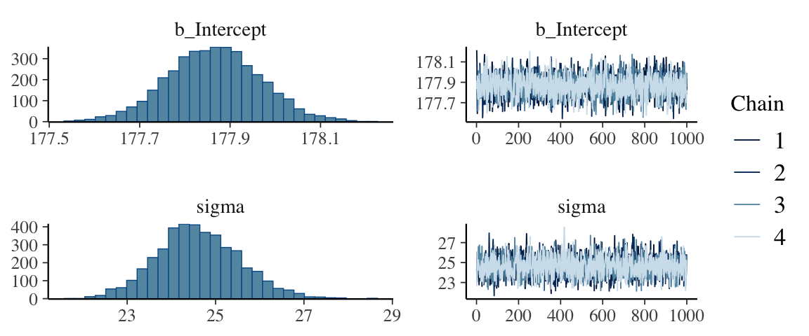
The chains look great. Here’s the model summary().
summary(b4.2) Family: gaussian
Links: mu = identity
Formula: height ~ 1
Data: d2 (Number of observations: 352)
Draws: 4 chains, each with iter = 2000; warmup = 1000; thin = 1;
total post-warmup draws = 4000
Regression Coefficients:
Estimate Est.Error l-95% CI u-95% CI Rhat Bulk_ESS Tail_ESS
Intercept 177.86 0.10 177.66 178.07 1.00 2982 2248
Further Distributional Parameters:
Estimate Est.Error l-95% CI u-95% CI Rhat Bulk_ESS Tail_ESS
sigma 24.61 0.94 22.82 26.59 1.00 3163 2678
Draws were sampled using sampling(NUTS). For each parameter, Bulk_ESS
and Tail_ESS are effective sample size measures, and Rhat is the potential
scale reduction factor on split chains (at convergence, Rhat = 1).Subsetting the summary() output with $fixed provides a convenient way to compare the Intercept summaries between b4.1 and b4.2.
summary(b4.1)$fixed Estimate Est.Error l-95% CI u-95% CI Rhat Bulk_ESS Tail_ESS
Intercept 154.6054 0.4035752 153.7868 155.4105 1.001695 3654.491 2340.199summary(b4.2)$fixed Estimate Est.Error l-95% CI u-95% CI Rhat Bulk_ESS Tail_ESS
Intercept 177.8645 0.1022954 177.662 178.065 1.00002 2981.815 2247.9674.3.6 Sampling from a mapbrm() fit
mapbrms doesn’t seem to have a convenience function that works the way vcov() does for rethinking.
vcov(b4.1) Intercept
Intercept 0.1628729This only returned the first element in the matrix it did for rethinking. That is, it appears the brms::vcov() function only returns the variance/covariance matrix for the single-level \(\beta\) parameters (i.e., those used to model \(\mu\)).
However, if you really wanted this information, you could get it after putting the HMC chains in a data frame. We do that with the as_draws_df() function, which we’ll be using a lot of as we go along.
post <- as_draws_df(b4.1)
head(post)# A draws_df: 6 iterations, 1 chains, and 5 variables
b_Intercept sigma Intercept lprior lp__
1 154 7.8 154 -8.5 -1226
2 154 7.7 154 -8.5 -1226
3 155 8.5 155 -8.5 -1229
4 155 7.9 155 -8.5 -1226
5 154 8.1 154 -8.5 -1227
6 155 8.0 155 -8.5 -1226
# ... hidden reserved variables {'.chain', '.iteration', '.draw'}Now select() the columns containing the draws from the desired parameters and feed them into cov().
select(post, b_Intercept:sigma) %>%
cov() b_Intercept sigma
b_Intercept 0.1628729253 -0.0002503749
sigma -0.0002503749 0.0869613252That was “(1) a vector of variances for the parameters and (2) a correlation matrix” for them (p. 90). Here are just the variances (i.e., the diagonal elements) and the correlation matrix.
# variances
select(post, b_Intercept:sigma) %>%
cov() %>%
diag()b_Intercept sigma
0.16287293 0.08696133 # correlation
post %>%
select(b_Intercept, sigma) %>%
cor() b_Intercept sigma
b_Intercept 1.000000000 -0.002103794
sigma -0.002103794 1.000000000With our post <- as_draws_df(b4.1) code from a few lines above, we’ve already done the brms version of what McElreath did with extract.samples() on page 90. However, what happened under the hood was different. Whereas rethinking used the mvnorm() function from the MASS package (Ripley, 2022; Venables & Ripley, 2002), in brms we just extracted the iterations of the HMC chains and put them in a data frame.
str(post)draws_df [4,000 × 8] (S3: draws_df/draws/tbl_df/tbl/data.frame)
$ b_Intercept: num [1:4000] 154 154 155 155 154 ...
$ sigma : num [1:4000] 7.76 7.7 8.52 7.95 8.05 ...
$ Intercept : num [1:4000] 154 154 155 155 154 ...
$ lprior : num [1:4000] -8.53 -8.52 -8.51 -8.5 -8.54 ...
$ lp__ : num [1:4000] -1226 -1226 -1229 -1226 -1227 ...
$ .chain : int [1:4000] 1 1 1 1 1 1 1 1 1 1 ...
$ .iteration : int [1:4000] 1 2 3 4 5 6 7 8 9 10 ...
$ .draw : int [1:4000] 1 2 3 4 5 6 7 8 9 10 ...Notice how our data frame, post, includes a vector named lp__. That’s the log posterior. For more information on the log posterior, see the brms reference manual (Bürkner, 2022a), the “The Log-Posterior (function and gradient)” section of the Stan Development Team’s (2023) RStan: the R interface to Stan, or Stephen Martin’s nice explanation on the Stan Forums. The log posterior will largely be outside of our focus in this project.
Our post also contains a vector named lprior. This is the log of the joint prior and is a new addition to the output based on brms version 2.17.0. It is related to functionality from the up-and-coming priorsense package (Kallioinen et al., 2022), which is based on new work, such as Kallioinen et al. (2021). Though you’ll see it pop up in our output from time to time, the lprior will be outside of our focus in this project.
The final three columns–.chain, .iteration, and .draw–contain metadata about the posterior draws. We’ll end up using the .draw column to index the posterior draws, from time to time. You can learn more about these metadata columns here.
The summary() function doesn’t work for brms posterior data frames quite the way precis() does for posterior data frames from the rethinking package. E.g.,
summary(post[, 1:2]) b_Intercept sigma
Min. :153.1 Min. :6.927
1st Qu.:154.3 1st Qu.:7.564
Median :154.6 Median :7.762
Mean :154.6 Mean :7.768
3rd Qu.:154.9 3rd Qu.:7.961
Max. :156.1 Max. :8.920 Here’s one option using the transpose of a quantile() call nested within apply(), which is a very general function you can learn more about here or here.
t(apply(post[, 1:2], 2, quantile, probs = c(.5, .025, .75))) 50% 2.5% 75%
b_Intercept 154.611940 153.786780 154.865745
sigma 7.761514 7.225498 7.960993The base R code is compact, but somewhat opaque. Here’s how to do something similar with more explicit tidyverse code.
post %>%
select(sigma:b_Intercept) %>%
gather(parameter) %>%
group_by(parameter) %>%
summarise(mean = mean(value),
SD = sd(value),
`2.5_percentile` = quantile(value, probs = .025),
`97.5_percentile` = quantile(value, probs = .975)) %>%
mutate_if(is.numeric, round, digits = 2)# A tibble: 2 × 5
parameter mean SD `2.5_percentile` `97.5_percentile`
<chr> <dbl> <dbl> <dbl> <dbl>
1 b_Intercept 155. 0.4 154. 155.
2 sigma 7.77 0.29 7.23 8.38You can always get pretty similar information by just putting the brm() fit object into posterior_summary().
posterior_summary(b4.1) Estimate Est.Error Q2.5 Q97.5
b_Intercept 154.605420 0.40357518 153.786780 155.410455
sigma 7.768158 0.29489206 7.225498 8.377223
Intercept 154.605420 0.40357518 153.786780 155.410455
lprior -8.511030 0.02360932 -8.559544 -8.464553
lp__ -1227.016052 0.97349118 -1229.561352 -1226.061946And if you’re willing to drop the posterior \(\textit{SD}\)’s, you can use tidybayes::mean_qi(), too.
post %>%
select(sigma:b_Intercept) %>%
gather(parameter) %>%
group_by(parameter) %>%
mean_qi(value)# A tibble: 2 × 7
parameter value .lower .upper .width .point .interval
<chr> <dbl> <dbl> <dbl> <dbl> <chr> <chr>
1 b_Intercept 155. 154. 155. 0.95 mean qi
2 sigma 7.77 7.23 8.38 0.95 mean qi 4.3.6.1 Overthinking: Under the hood with multivariate sampling
Again, brms::as_draws_df() is not the same as rethinking::extract.samples(). Rather than use the MASS::mvnorm(), brms takes the draws from the HMC chains. McElreath covered all of this in Section 8.3 and we will too. You might also look at the brms reference manual or GitHub page for details. To get documentation in a hurry, you could also just execute ?as_draws_df.
4.3.6.2 Overthinking: Getting \(\sigma\) right
There’s no need to fret about this when using brms. With HMC, we are not constraining the posteriors to the multivariate normal distribution. Here’s our posterior density for \(\sigma\).
ggplot(data = post,
aes(x = sigma)) +
geom_density(linewidth = 1/10, fill = "black") +
scale_y_continuous(NULL, breaks = NULL) +
xlab(expression(sigma)) +
theme(panel.grid = element_blank())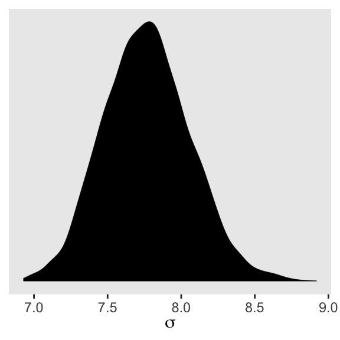
See? HMC handled the mild skew just fine.
But sometimes you want to actually model \(\sigma\), such as in the case where your variances are systematically heterogeneous. Bürkner calls these kinds of models distributional models, which you can learn more about in his (2022b) vignette Estimating distributional models with brms. As he explained in the vignette, you actually model \(\log (\sigma)\) in those instances. If you’re curious, we’ll practice with a model like this in Section 9.2.2. Kruschke also covered several models of this kind in his (2015) text, Doing Bayesian data analysis: A tutorial with R, JAGS, and Stan, which I’ve translated into brms and tidyverse code. Check out Section 16.3 for an example of modeling \(\log \sigma\) with a grouping variable.
4.4 Adding a predictor
What we’ve done above is a Gaussian model of height in a population of adults. But it doesn’t really have the usual feel of “regression” to it. Typically, we are interested in modeling how an outcome is related to some predictor variable. And by including a predictor variable in a particular way, we’ll have linear regression. (p. 92)
Here’s our scatter plot of our predictor weight and our criterion height.
ggplot(data = d2,
aes(x = weight, y = height)) +
geom_point(shape = 1, size = 2) +
theme_bw() +
theme(panel.grid = element_blank())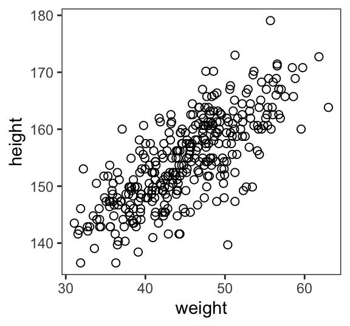
There’s obviously a relationship: Knowing a person’s weight helps you predict height.
To make this vague observation into a more precise quantitative model that relates values of
weightto plausible values ofheight, we need some more technology. How do we take our Gaussian model from the previous section and incorporate predictor variables? (p. 92)
4.4.1 The linear model strategy
The strategy is to make the parameter for the mean of a Gaussian distribution, \(\mu\), into a linear function of the predictor variable and other, new parameters that we invent. This strategy is often simply called the linear model. The linear model strategy instructs the golem to assume that the predictor variable has a perfect constant and additive relationship to the mean of the outcome. The golem then computes the posterior distribution of this constant relationship. (p. 92, emphasis in the original)
Our new univariable model will follow the formula
\[\begin{align*} h_i & \sim \operatorname{Normal}(\mu_i, \sigma) \\ \mu_i & = \alpha + \beta x_i \\ \alpha & \sim \operatorname{Normal}(178, 100) \\ \beta & \sim \operatorname{Normal}(0, 10) \\ \sigma & \sim \operatorname{Uniform}(0, 50). \end{align*}\]
4.4.1.1 Likelihood
The likelihood for our model is \(h_i \sim \operatorname{Normal}(\mu_i, \sigma)\).
4.4.1.2 Linear model
Our linear model is \(\mu_i = \alpha + \beta x_i\). The thing we’re modeling is \(\mu_i\), the conditional mean of our variable \(h_i\), and we’re modeling it with two parameters:
- \(\alpha\) (i.e., the intercept) and
- \(\beta\) (i.e., the slope).
4.4.1.3 Priors
Our univariable model has three priors:
\[\begin{align*} \alpha & \sim \operatorname{Normal}(178, 100), \\ \beta & \sim \operatorname{Normal}(0, 10), \; \text{and} \\ \sigma & \sim \operatorname{Uniform}(0, 50). \end{align*}\]
McElreath recommended we plot them. If you recall, we’ve already plotted \(\operatorname{Normal}(178, 100)\) and \(\operatorname{Uniform}(0, 50)\). Here’s what the prior for our new \(\beta\) parameter looks like.
tibble(beta = -40:40) %>%
mutate(density = dnorm(beta, mean = 0, sd = 10)) %>%
ggplot(aes(x = beta, y = density)) +
geom_area(linewidth = 0, fill = "royalblue") +
scale_y_continuous(NULL, breaks = NULL) +
xlab(expression(beta)) +
theme(panel.grid = element_blank())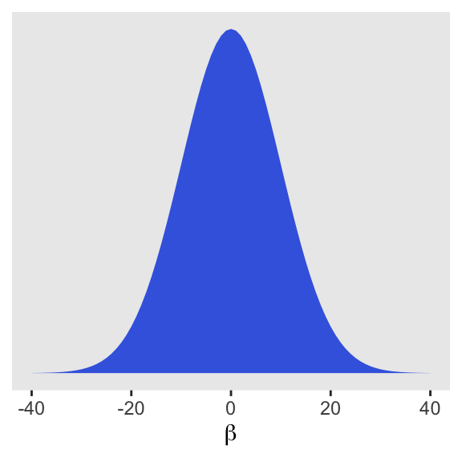
4.4.2 Fitting the model
If you look closely at the statistical model and corresponding rethinking code at the bottom of page 95, you’ll see they contradict each other on the prior for \(\alpha\). Though we didn’t note it at the time, there was similar contradiction in the middle of page 87 for m4.1. McElreath acknowledged this in his Errata, where he indicated the intended prior was \(\alpha \sim \operatorname{Normal}(178, 100)\). We will use that prior here, too.
Unlike with the rethinking package, our brms::brm() syntax won’t perfectly mirror the formal statistical notation. But here are the analogues to the exposition at the bottom of page 95 (with the corrected \(\alpha\) prior).
- \(h_i \sim \operatorname{Normal}(\mu_i, \sigma)\):
family = gaussian - \(\mu_i = \alpha + \beta x_i\):
height ~ 1 + weight - \(\alpha \sim \operatorname{Normal}(178, 100)\):
prior(normal(178, 100), class = Intercept - \(\beta \sim \operatorname{Normal}(0, 10)\):
prior(normal(0, 10), class = b) - \(\sigma \sim \operatorname{Uniform}(0, 50)\):
prior(uniform(0, 50), class = sigma)
Thus, to add a predictor you just the + operator in the model formula.
b4.3 <- brm(
data = d2,
family = gaussian,
height ~ 1 + weight,
prior = c(prior(normal(178, 100), class = Intercept),
prior(normal(0, 10), class = b),
prior(uniform(0, 50), class = sigma, ub = 50)),
iter = 2000, warmup = 1000, chains = 4, cores = 4,
seed = 4,
file = "fits/b04.03")Here are the trace plots.
plot(b4.3)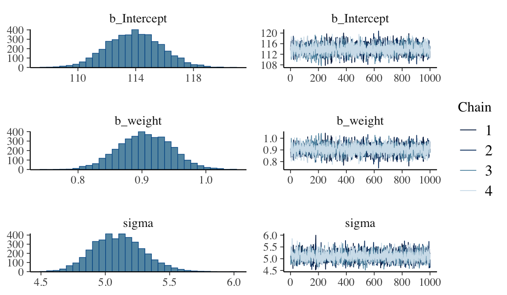
4.4.2.1 Overthinking: Embedding linear models
I’m not aware that you can embed the linear model within the likelihood function within brms::brm() the way McElreath did in R code 4.39. However, it can be pedagogically useful to write out the statistical model that way:
\[\begin{align*} h_i & \sim \operatorname{Normal}(\alpha + \beta x_i, \sigma) \\ \alpha & \sim \operatorname{Normal}(178, 100) \\ \beta & \sim \operatorname{Normal}(0, 10) \\ \sigma & \sim \operatorname{Uniform}(0, 50) \end{align*}\]
Whoah. What? Where did \(\mu_i\) go? It’s still there. We just expressed it as \(\alpha + \beta x_i\).
4.4.3 Interpreting the model fit
One trouble with statistical models is that they are hard to understand. Once you’ve fit the model, it can only report posterior probabilities. These are the right answer to the question that is the combination of model and data. But it’s your responsibility to process the answer and make sense of it.
There are two broad categories of processing: (1) reading tables and (2) plotting. (p. 97).
4.4.3.1 Tables of estimates
With a little [] subsetting we can exclude the log posterior from the posterior_summary() so we can focus on the parameters.
posterior_summary(b4.3)[1:3, ] Estimate Est.Error Q2.5 Q97.5
b_Intercept 113.8949596 1.88213359 110.266200 117.57464
b_weight 0.9047626 0.04156038 0.822951 0.98523
sigma 5.1009801 0.19695455 4.737566 5.50402Again, brms doesn’t have a convenient corr = TRUE argument for plot() or summary(). But you can get that information after putting the chains in a data frame.
as_draws_df(b4.3) %>%
select(b_Intercept:sigma) %>%
cor() %>%
round(digits = 2) b_Intercept b_weight sigma
b_Intercept 1.00 -0.99 0
b_weight -0.99 1.00 0
sigma 0.00 0.00 1Much like the results from McElreath’s rethinking package, two of the parameters from our model fit with brm() are highly correlated, too. With centering, we can reduce that correlation.
d2 <- d2 %>%
mutate(weight_c = weight - mean(weight))Fit the weight_c model, b4.4.
b4.4 <- brm(
data = d2,
family = gaussian,
height ~ 1 + weight_c,
prior = c(prior(normal(178, 100), class = Intercept),
prior(normal(0, 10), class = b),
prior(uniform(0, 50), class = sigma, ub = 50)),
iter = 2000, warmup = 1000, chains = 4, cores = 4,
seed = 4,
file = "fits/b04.04")plot(b4.4)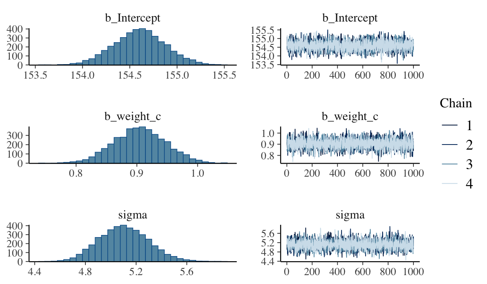
posterior_summary(b4.4)[1:3, ] Estimate Est.Error Q2.5 Q97.5
b_Intercept 154.6038898 0.27111578 154.0681182 155.1405433
b_weight_c 0.9047413 0.04293665 0.8216087 0.9879383
sigma 5.1052573 0.19605616 4.7412961 5.5034484Here’s the parameter correlation info.
as_draws_df(b4.4) %>%
select(b_Intercept:sigma) %>%
cor() %>%
round(digits = 2) b_Intercept b_weight_c sigma
b_Intercept 1.00 -0.01 -0.02
b_weight_c -0.01 1.00 0.00
sigma -0.02 0.00 1.00See? Now all the correlations are quite low. If you prefer a visual approach, try executing pairs(b4.4).
Amidst all this talk about tables, I haven’t actually shown how to put these parameter summaries in a table. Here’s an example of how you might convert the posterior_summary() output into a summary table roughly following APA style.
posterior_summary(b4.4)[1:3, ] %>%
data.frame() %>%
rownames_to_column("parameter") %>%
mutate_if(is.double, round, digits = 2) %>%
rename(mean = Estimate,
sd = Est.Error) %>%
mutate(`95% CI` = str_c("[", Q2.5, ", ", Q97.5, "]")) %>%
select(-starts_with("Q")) %>%
knitr::kable()| parameter | mean | sd | 95% CI |
|---|---|---|---|
| b_Intercept | 154.60 | 0.27 | [154.07, 155.14] |
| b_weight_c | 0.90 | 0.04 | [0.82, 0.99] |
| sigma | 5.11 | 0.20 | [4.74, 5.5] |
This, of course, is just one way to present the summary information. Hopefully it’s a useful start.
4.4.3.2 Plotting posterior inference against the data
In truth, tables of estimates are usually insufficient for understanding the information contained in the posterior distribution. It’s almost always much more useful to plot the posterior inference against the data. Not only does plotting help in interpreting the posterior, bit it also provides an informal check on model assumptions. (p. 100)
Here is the code for Figure 4.4. Note our use of the fixef() function.
d2 %>%
ggplot(aes(x = weight, y = height)) +
geom_abline(intercept = fixef(b4.3)[1],
slope = fixef(b4.3)[2]) +
geom_point(shape = 1, size = 2, color = "royalblue") +
theme_bw() +
theme(panel.grid = element_blank())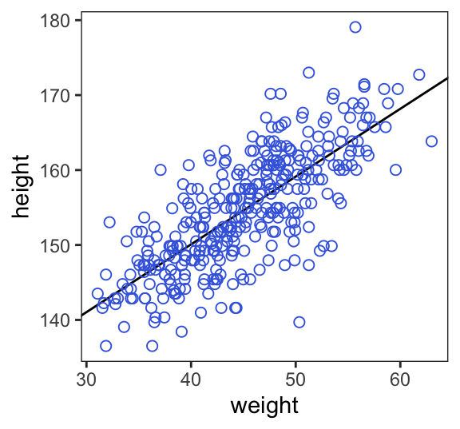
In the brms reference manual, Bürkner described the job of thefixef() function as “extract[ing] the population-level (‘fixed’) effects from a brmsfit object”. If you’re new to multilevel models, it might not be clear what he meant by “population-level” or “fixed” effects. Don’t worry. That’ll all become clear starting around Chapter 12. In the meantime, just think of them as the typical regression parameters, minus \(\sigma\).
4.4.3.3 Adding uncertainty around the mean
Be default, we extract all the posterior iterations with as_draws_df(). Because we had 4,000 posterior draws, our output will contain 4,000 rows.
post <- as_draws_df(b4.3)
post %>%
glimpse()Rows: 4,000
Columns: 9
$ b_Intercept <dbl> 113.6455, 115.3213, 113.1374, 114.0955, 114.7314, 117.6647, 116.0936, 112.2113, 116.8920, 113.2517, 113.6954…
$ b_weight <dbl> 0.9094439, 0.8692495, 0.9221065, 0.8911752, 0.8982400, 0.8324743, 0.8577906, 0.9432165, 0.8432348, 0.9221309…
$ sigma <dbl> 5.122083, 4.994965, 5.217017, 4.776439, 5.261036, 4.912230, 5.207398, 5.029498, 5.307415, 5.193727, 5.154645…
$ Intercept <dbl> 154.5618, 154.4293, 154.6234, 154.1899, 155.1437, 155.1181, 154.6860, 154.6471, 154.8295, 154.7388, 154.5835…
$ lprior <dbl> -12.68926, -12.68921, -12.68923, -12.68997, -12.68781, -12.68730, -12.68851, -12.68937, -12.68805, -12.68896…
$ lp__ <dbl> -1082.223, -1082.855, -1082.517, -1084.899, -1084.523, -1086.155, -1083.054, -1082.656, -1084.176, -1082.569…
$ .chain <int> 1, 1, 1, 1, 1, 1, 1, 1, 1, 1, 1, 1, 1, 1, 1, 1, 1, 1, 1, 1, 1, 1, 1, 1, 1, 1, 1, 1, 1, 1, 1, 1, 1, 1, 1, 1, …
$ .iteration <int> 1, 2, 3, 4, 5, 6, 7, 8, 9, 10, 11, 12, 13, 14, 15, 16, 17, 18, 19, 20, 21, 22, 23, 24, 25, 26, 27, 28, 29, 3…
$ .draw <int> 1, 2, 3, 4, 5, 6, 7, 8, 9, 10, 11, 12, 13, 14, 15, 16, 17, 18, 19, 20, 21, 22, 23, 24, 25, 26, 27, 28, 29, 3…Each row is a correlated random sample from the joint posterior of all three parameters, using the covariances provided by [
cov(as_draws_df(b4.4)[, 1:3])]. The paired values of [b_Intercept] and [b_weight] on each row define the line. The average of very many of these lines is the MAP line. (p. 101)
Here are the four models leading up to McElreath’s Figure 4.5. These models are all variations on b4.3 from above, which we’ll reflect in our naming convention.
n <- 10
b4.3_010 <- brm(
data = d2 %>%
slice(1:n), # note our tricky use of `n` and `slice()`
family = gaussian,
height ~ 1 + weight,
prior = c(prior(normal(178, 100), class = Intercept),
prior(normal(0, 10), class = b),
prior(uniform(0, 50), class = sigma, ub = 50)),
iter = 2000, warmup = 1000, chains = 4, cores = 4,
seed = 4,
file = "fits/b04.03_010")
n <- 50
b4.3_050 <- brm(
data = d2 %>%
slice(1:n),
family = gaussian,
height ~ 1 + weight,
prior = c(prior(normal(178, 100), class = Intercept),
prior(normal(0, 10), class = b),
prior(uniform(0, 50), class = sigma, ub = 50)),
iter = 2000, warmup = 1000, chains = 4, cores = 4,
seed = 4,
file = "fits/b04.03_050")
n <- 150
b4.3_150 <- brm(
data = d2 %>%
slice(1:n),
family = gaussian,
height ~ 1 + weight,
prior = c(prior(normal(178, 100), class = Intercept),
prior(normal(0, 10), class = b),
prior(uniform(0, 50), class = sigma, ub = 50)),
iter = 2000, warmup = 1000, chains = 4, cores = 4,
seed = 4,
file = "fits/b04.03_150")
n <- 352
b4.3_352 <- brm(
data = d2 %>%
slice(1:n),
family = gaussian,
height ~ 1 + weight,
prior = c(prior(normal(178, 100), class = Intercept),
prior(normal(0, 10), class = b),
prior(uniform(0, 50), class = sigma, ub = 50)),
iter = 2000, warmup = 1000, chains = 4, cores = 4,
seed = 4,
file = "fits/b04.03_352")I’m not going to clutter up the document with all the trace plots and coefficient summaries from these four models. But here’s how to get that information.
plot(b4.3_010)
print(b4.3_010)
plot(b4.3_050)
print(b4.3_050)
plot(b4.3_150)
print(b4.3_150)
plot(b4.3_352)
print(b4.3_352)We’ll need to put the chains of each model into data frames.
post010 <- as_draws_df(b4.3_010)
post050 <- as_draws_df(b4.3_050)
post150 <- as_draws_df(b4.3_150)
post352 <- as_draws_df(b4.3_352)Here is the code for the four individual plots.
p1 <- ggplot(data = d2 %>% slice(1:10),
aes(x = weight, y = height)) +
geom_abline(data = post010 %>% slice(1:20),
aes(intercept = b_Intercept, slope = b_weight, group = .draw),
linewidth = 1/3, alpha = .3) +
geom_point(shape = 1, size = 2, color = "royalblue") +
coord_cartesian(xlim = range(d2$weight),
ylim = range(d2$height)) +
labs(subtitle = "N = 10")
p2 <- ggplot(data = d2 %>% slice(1:50),
aes(x = weight, y = height)) +
geom_abline(data = post050 %>% slice(1:20),
aes(intercept = b_Intercept, slope = b_weight, group = .draw),
linewidth = 1/3, alpha = .3) +
geom_point(shape = 1, size = 2, color = "royalblue") +
coord_cartesian(xlim = range(d2$weight),
ylim = range(d2$height)) +
labs(subtitle = "N = 50")
p3 <- ggplot(data = d2 %>% slice(1:150),
aes(x = weight, y = height)) +
geom_abline(data = post150 %>% slice(1:20),
aes(intercept = b_Intercept, slope = b_weight, group = .draw),
linewidth = 1/3, alpha = .3) +
geom_point(shape = 1, size = 2, color = "royalblue") +
coord_cartesian(xlim = range(d2$weight),
ylim = range(d2$height)) +
labs(subtitle = "N = 150")
p4 <- ggplot(data = d2,
aes(x = weight, y = height)) +
geom_abline(data = post352 %>% slice(1:20),
aes(intercept = b_Intercept, slope = b_weight, group = .draw),
linewidth = 1/3, alpha = .3) +
geom_point(shape = 1, size = 2, color = "royalblue") +
coord_cartesian(xlim = range(d2$weight),
ylim = range(d2$height)) +
labs(subtitle = "N = 352")Now we can combine the ggplots with patchwork syntax to make the full version of Figure 4.5.
(p1 + p2 + p3 + p4) &
theme_bw() &
theme(panel.grid = element_blank())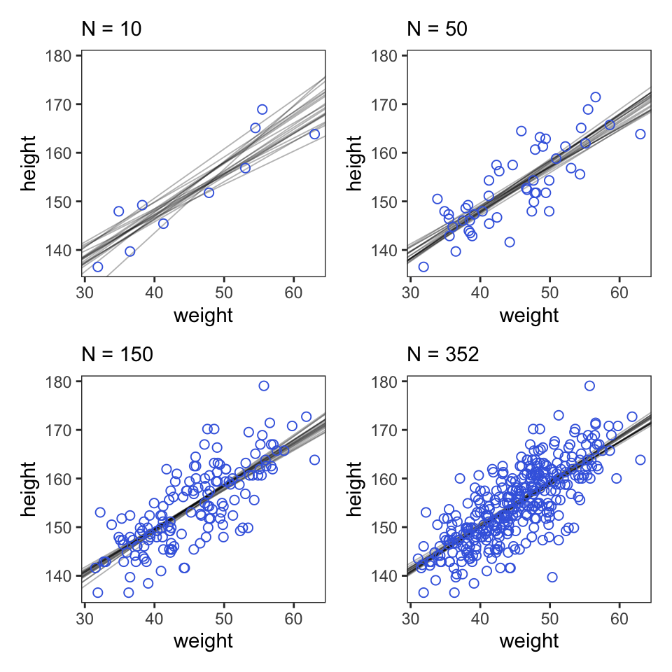
4.4.3.4 Plotting regression intervals and contours
Remember, if you want to plot McElreath’s mu_at_50 with ggplot2, you’ll need to save it as a data frame or a tibble.
mu_at_50 <- post %>%
transmute(mu_at_50 = b_Intercept + b_weight * 50)
head(mu_at_50)# A tibble: 6 × 1
mu_at_50
<dbl>
1 159.
2 159.
3 159.
4 159.
5 160.
6 159.And here is a version McElreath’s Figure 4.6 density plot.
mu_at_50 %>%
ggplot(aes(x = mu_at_50)) +
geom_density(linewidth = 0, fill = "royalblue") +
scale_y_continuous(NULL, breaks = NULL) +
labs(x = expression(mu["height | weight = 50"])) +
theme_classic()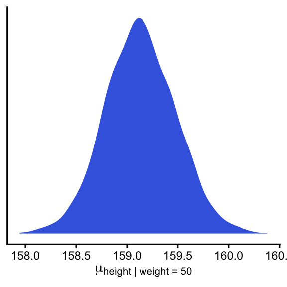
We’ll use mean_hdi() to get both 89% and 95% HPDIs along with the mean.
mean_hdi(mu_at_50[,1], .width = c(.89, .95))# A tibble: 2 × 6
mu_at_50 .lower .upper .width .point .interval
<dbl> <dbl> <dbl> <dbl> <chr> <chr>
1 159. 159. 160. 0.89 mean hdi
2 159. 158. 160. 0.95 mean hdi If you wanted to express those sweet 95% HPDIs on your density plot, you might use the tidybayes::stat_halfeye() function. Since stat_halfeye() also returns a point estimate, we’ll just throw in the mode.
mu_at_50 %>%
ggplot(aes(x = mu_at_50, y = 0)) +
stat_halfeye(point_interval = mode_hdi, .width = .95,
fill = "royalblue") +
scale_y_continuous(NULL, breaks = NULL) +
xlab(expression(mu["height | weight = 50"])) +
theme_classic()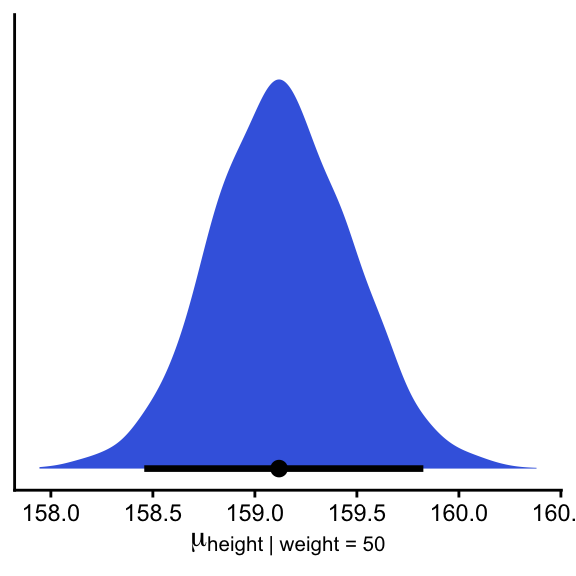
In brms, you would use fitted() to do what McElreath accomplished with link() in R code 4.53.
mu <- fitted(b4.3, summary = F)
str(mu) num [1:4000, 1:352] 157 157 157 157 158 ...When you specify summary = F, fitted() returns a matrix of values with as many rows as there were post-warmup iterations across your HMC chains and as many columns as there were cases in your data. Because we had 4,000 post-warmup iterations and \(n\) = 352, fitted() returned a matrix of 4,000 rows and 352 vectors. If you omitted the summary = F argument, the default is TRUE and fitted() will return summary information instead.
Much like rethinking’s link(), fitted() can accommodate custom predictor values with its newdata argument.
weight_seq <- tibble(weight = seq(from = 25, to = 70, by = 1))
mu <- fitted(b4.3,
summary = F,
newdata = weight_seq) %>%
as_tibble() %>%
# here we name the columns after the `weight` values from which they were computed
set_names(25:70) %>%
mutate(iter = 1:n())
str(mu)Anticipating ggplot2, we went ahead and converted the output to a tibble. But we might do a little more data processing with the aid of tidyr::gather(). With the gather() function, we’ll convert the data from the wide format to the long format. If you’re new to the distinction between wide and long data, you can learn more here or here.
mu <- mu %>%
gather(weight, height, -iter) %>%
# we might reformat `weight` to numerals
mutate(weight = as.numeric(weight))
head(mu)# A tibble: 6 × 3
iter weight height
<int> <dbl> <dbl>
1 1 25 136.
2 2 25 137.
3 3 25 136.
4 4 25 136.
5 5 25 137.
6 6 25 138.That’s enough data processing. Here we reproduce McElreath’s Figure 4.7.a.
d2 %>%
ggplot(aes(x = weight, y = height)) +
geom_point(data = mu %>% filter(iter < 101),
alpha = .1)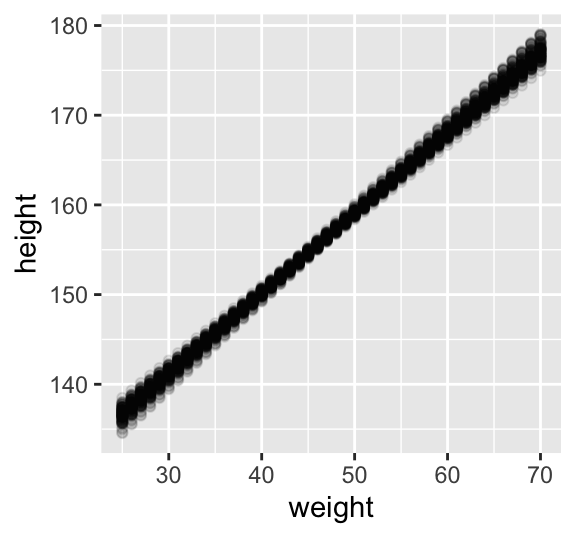
# or prettied up a bit
d2 %>%
ggplot(aes(x = weight, y = height)) +
geom_point(data = mu %>% filter(iter < 101),
color = "navyblue", alpha = .05) +
theme(text = element_text(family = "Times"),
panel.grid = element_blank())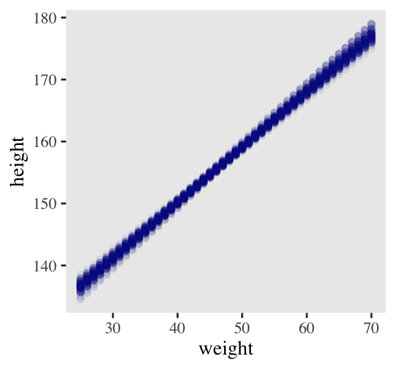
With fitted(), it’s quite easy to plot a regression line and its intervals. Just omit the summary = F argument.
mu_summary <- fitted(b4.3, newdata = weight_seq) %>%
data.frame() %>%
# let's tack on the `weight` values from `weight_seq`
bind_cols(weight_seq)
head(mu_summary) Estimate Est.Error Q2.5 Q97.5 weight
1 136.5140 0.8672737 134.8317 138.2231 25
2 137.4188 0.8279263 135.7928 139.0403 26
3 138.3235 0.7888060 136.7784 139.8739 27
4 139.2283 0.7499482 137.7530 140.7001 28
5 140.1331 0.7113960 138.7363 141.5268 29
6 141.0378 0.6732018 139.7182 142.3674 30Here it is, our analogue to Figure 4.7.b.
d2 %>%
ggplot(aes(x = weight, y = height)) +
geom_smooth(data = mu_summary,
aes(y = Estimate, ymin = Q2.5, ymax = Q97.5),
stat = "identity",
fill = "grey70", color = "black", alpha = 1, linewidth = 1/2) +
geom_point(color = "navyblue", shape = 1, size = 1.5, alpha = 2/3) +
coord_cartesian(xlim = range(d2$weight)) +
theme(text = element_text(family = "Times"),
panel.grid = element_blank())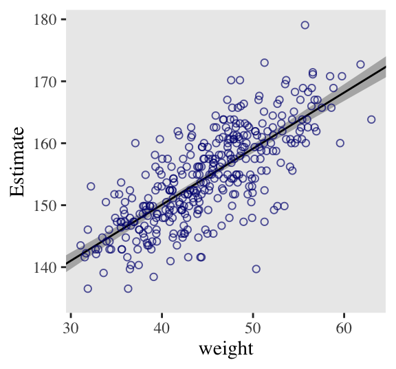
If you wanted to use intervals other than the default 95% ones, you’d enter a probs argument like this: fitted(b4.3, newdata = weight.seq, probs = c(.25, .75)). The resulting third and fourth vectors from the fitted() object would be named Q25 and Q75 instead of the default Q2.5 and Q97.5. The Q prefix stands for quantile.
4.4.3.4.1 Overthinking: How link fitted() works
Similar to rethinking::link(), brms::fitted() uses the formula from your model to compute the model expectations for a given set of predictor values. I use it a lot in this project. If you follow along, you’ll get a good handle on it. For some quick documentation, execute ?fitted.brmsfit.
4.4.3.5 Prediction intervals
Even though our full statistical model (omitting priors for the sake of simplicity) is
\[h_i \sim \operatorname{Normal}(\mu_i = \alpha + \beta x_i, \sigma),\]
we’ve only been plotting the \(\mu_i\) part. In order to bring in the variability expressed by \(\sigma\), we’ll have to switch to the predict() function. Much as brms::fitted() was our analogue to rethinking::link(), brms::predict() is our analogue to rethinking::sim().
We can reuse our weight_seq data from before. But in case you forgot, here’s that code again.
weight_seq <- tibble(weight = seq(from = 25, to = 70, by = 1))The predict() code looks a lot like what we used for fitted().
pred_height <- predict(b4.3, newdata = weight_seq) %>%
data.frame() %>%
bind_cols(weight_seq)
pred_height %>%
slice(1:6) Estimate Est.Error Q2.5 Q97.5 weight
1 136.4037 5.133124 126.4890 146.4930 25
2 137.5524 5.117016 127.2685 147.4671 26
3 138.3397 5.082465 128.4711 148.1160 27
4 139.2898 5.064452 129.4128 149.2757 28
5 140.0341 5.142726 130.0582 150.3632 29
6 141.1738 5.132042 131.3054 151.2876 30This time the summary information in our data frame is for, as McElreath put it, “simulated heights, not distributions of plausible average height, \(\mu\)” (p. 108). Another way of saying that is that these simulations are the joint consequence of \(\mu\) AND \(\sigma\), unlike the results of fitted(), which only reflect \(\mu\). Here’s our plot for Figure 4.8.
d2 %>%
ggplot(aes(x = weight)) +
geom_ribbon(data = pred_height,
aes(ymin = Q2.5, ymax = Q97.5),
fill = "grey83") +
geom_smooth(data = mu_summary,
aes(y = Estimate, ymin = Q2.5, ymax = Q97.5),
stat = "identity",
fill = "grey70", color = "black", alpha = 1, linewidth = 1/2) +
geom_point(aes(y = height),
color = "navyblue", shape = 1, size = 1.5, alpha = 2/3) +
ylab("height") +
coord_cartesian(xlim = range(d2$weight),
ylim = range(d2$height)) +
theme(text = element_text(family = "Times"),
panel.grid = element_blank())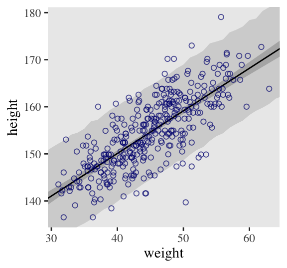
4.5 Polynomial regression
Remember d?
d %>%
glimpse()Rows: 544
Columns: 4
$ height <dbl> 151.7650, 139.7000, 136.5250, 156.8450, 145.4150, 163.8300, 149.2250, 168.9100, 147.9550, 165.1000, 154.3050, 151…
$ weight <dbl> 47.82561, 36.48581, 31.86484, 53.04191, 41.27687, 62.99259, 38.24348, 55.47997, 34.86988, 54.48774, 49.89512, 41.…
$ age <dbl> 63.0, 63.0, 65.0, 41.0, 51.0, 35.0, 32.0, 27.0, 19.0, 54.0, 47.0, 66.0, 73.0, 20.0, 65.3, 36.0, 44.0, 31.0, 12.0,…
$ male <int> 1, 0, 0, 1, 0, 1, 0, 1, 0, 1, 0, 1, 0, 0, 0, 1, 1, 0, 1, 0, 0, 1, 0, 1, 0, 1, 0, 0, 1, 0, 1, 1, 1, 0, 0, 0, 0, 0,…The quadratic is probably the most commonly-used polynomial regression model. It follows the form
\[\mu = \alpha + \beta_1 x_i + \beta_2 x_i^2.\]
McElreath warned: “Fitting these models to data is easy. Interpreting them can be hard” (p. 111). Standardizing will help brm() fit the model. We might standardize our weight variable like so.
d <- d %>%
mutate(weight_s = (weight - mean(weight)) / sd(weight))Here’s the quadratic model in brms.
b4.5 <- brm(
data = d,
family = gaussian,
height ~ 1 + weight_s + I(weight_s^2),
prior = c(prior(normal(178, 100), class = Intercept),
prior(normal(0, 10), class = b),
prior(uniform(0, 50), class = sigma, ub = 50)),
iter = 2000, warmup = 1000, chains = 4, cores = 4,
seed = 4,
file = "fits/b04.05")plot(b4.5)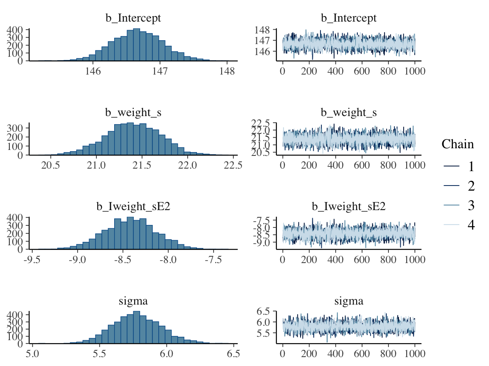
print(b4.5) Family: gaussian
Links: mu = identity
Formula: height ~ 1 + weight_s + I(weight_s^2)
Data: d (Number of observations: 544)
Draws: 4 chains, each with iter = 2000; warmup = 1000; thin = 1;
total post-warmup draws = 4000
Regression Coefficients:
Estimate Est.Error l-95% CI u-95% CI Rhat Bulk_ESS Tail_ESS
Intercept 146.67 0.38 145.94 147.41 1.00 3793 3193
weight_s 21.40 0.30 20.80 21.96 1.00 3850 3274
Iweight_sE2 -8.42 0.28 -8.98 -7.88 1.00 3948 3127
Further Distributional Parameters:
Estimate Est.Error l-95% CI u-95% CI Rhat Bulk_ESS Tail_ESS
sigma 5.78 0.18 5.44 6.16 1.00 4148 2994
Draws were sampled using sampling(NUTS). For each parameter, Bulk_ESS
and Tail_ESS are effective sample size measures, and Rhat is the potential
scale reduction factor on split chains (at convergence, Rhat = 1).Our quadratic plot requires new fitted()- and predict()-oriented wrangling.
weight_seq <- tibble(weight_s = seq(from = -2.5, to = 2.5, length.out = 30))
f <- fitted(b4.5, newdata = weight_seq) %>%
data.frame() %>%
bind_cols(weight_seq)
p <- predict(b4.5, newdata = weight_seq) %>%
data.frame() %>%
bind_cols(weight_seq) Behold the code for our version of Figure 4.9.a. You’ll notice how little the code changed from that for Figure 4.8, above.
ggplot(data = d,
aes(x = weight_s)) +
geom_ribbon(data = p,
aes(ymin = Q2.5, ymax = Q97.5),
fill = "grey83") +
geom_smooth(data = f,
aes(y = Estimate, ymin = Q2.5, ymax = Q97.5),
stat = "identity",
fill = "grey70", color = "black", alpha = 1, linewidth = 1/2) +
geom_point(aes(y = height),
color = "navyblue", shape = 1, size = 1.5, alpha = 1/3) +
coord_cartesian(xlim = range(d$weight_s)) +
theme(text = element_text(family = "Times"),
panel.grid = element_blank())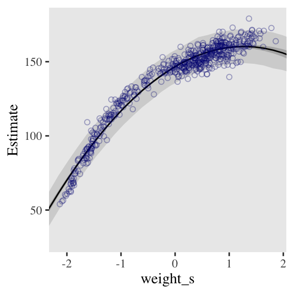
From a formula perspective, the cubic model is a simple extenstion of the quadratic:
\[\mu = \alpha + \beta_1 x_i + \beta_2 x_i^2 + \beta_3 x_i^3.\]
Fit it like so.
b4.6 <- brm(
data = d,
family = gaussian,
height ~ 1 + weight_s + I(weight_s^2) + I(weight_s^3),
prior = c(prior(normal(178, 100), class = Intercept),
prior(normal(0, 10), class = b),
prior(uniform(0, 50), class = sigma, ub = 50)),
iter = 2000, warmup = 1000, chains = 4, cores = 4,
seed = 4,
file = "fits/b04.06")And now we’ll fit the good old linear model.
b4.7 <- brm(
data = d, family = gaussian,
height ~ 1 + weight_s,
prior = c(prior(normal(178, 100), class = Intercept),
prior(normal(0, 10), class = b),
prior(uniform(0, 50), class = sigma, ub = 50)),
iter = 2000, warmup = 1000, chains = 4, cores = 4,
seed = 4,
file = "fits/b04.07")Here’s the fitted(), predict(), and ggplot2 code for Figure 4.9.c, the cubic model.
f <- fitted(b4.6, newdata = weight_seq) %>%
data.frame() %>%
bind_cols(weight_seq)
p <- predict(b4.6, newdata = weight_seq) %>%
data.frame() %>%
bind_cols(weight_seq)
ggplot(data = d,
aes(x = weight_s)) +
geom_ribbon(data = p,
aes(ymin = Q2.5, ymax = Q97.5),
fill = "grey83") +
geom_smooth(data = f,
aes(y = Estimate, ymin = Q2.5, ymax = Q97.5),
stat = "identity",
fill = "grey70", color = "black", alpha = 1, linewidth = 1/4) +
geom_point(aes(y = height),
color = "navyblue", shape = 1, size = 1.5, alpha = 1/3) +
coord_cartesian(xlim = range(d$weight_s)) +
theme(text = element_text(family = "Times"),
panel.grid = element_blank())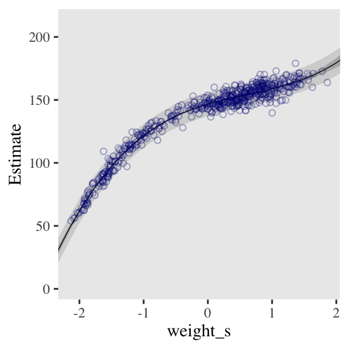
And here’s the fitted(), predict(), and ggplot2 code for Figure 4.9.a, the linear model.
f <- fitted(b4.7, newdata = weight_seq) %>%
data.frame() %>%
bind_cols(weight_seq)
p <- predict(b4.7, newdata = weight_seq) %>%
data.frame() %>%
bind_cols(weight_seq)
ggplot(data = d,
aes(x = weight_s)) +
geom_ribbon(data = p,
aes(ymin = Q2.5, ymax = Q97.5),
fill = "grey83") +
geom_smooth(data = f,
aes(y = Estimate, ymin = Q2.5, ymax = Q97.5),
stat = "identity",
fill = "grey70", color = "black", alpha = 1, linewidth = 1/4) +
geom_point(aes(y = height),
color = "navyblue", shape = 1, size = 1.5, alpha = 1/3) +
coord_cartesian(xlim = range(d$weight_s)) +
theme(text = element_text(family = "Times"),
panel.grid = element_blank())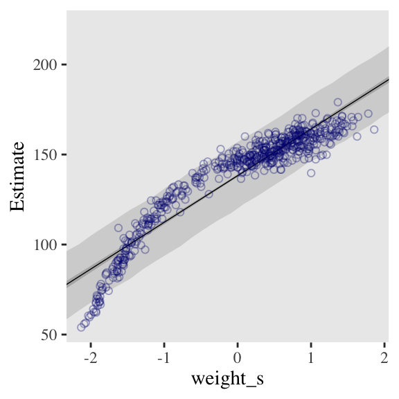
4.5.0.0.1 Overthinking: Converting back to natural scale
You can apply McElreath’s conversion trick within the ggplot2 environment, too. Here it is with the linear model.
at <- c(-2, -1, 0, 1, 2)
ggplot(data = d,
aes(x = weight_s)) +
geom_ribbon(data = p,
aes(ymin = Q2.5, ymax = Q97.5),
fill = "grey83") +
geom_smooth(data = f,
aes(y = Estimate, ymin = Q2.5, ymax = Q97.5),
stat = "identity",
fill = "grey70", color = "black", alpha = 1, linewidth = 1/4) +
geom_point(aes(y = height),
color = "navyblue", shape = 1, size = 1.5, alpha = 1/3) +
coord_cartesian(xlim = range(d$weight_s)) +
theme(text = element_text(family = "Times"),
panel.grid = element_blank()) +
# here it is!
scale_x_continuous("standardized weight converted back",
breaks = at,
labels = round(at * sd(d$weight) + mean(d$weight), 1))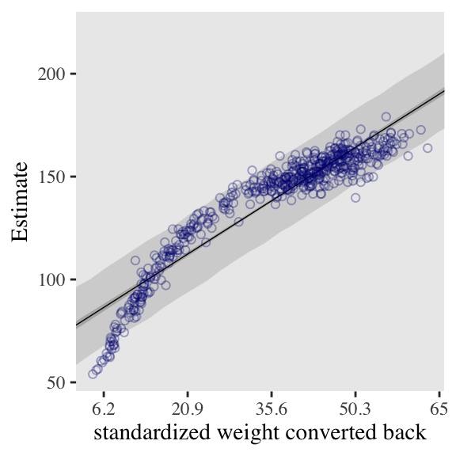
Session info
sessionInfo()R version 4.5.1 (2025-06-13)
Platform: aarch64-apple-darwin20
Running under: macOS Ventura 13.4
Matrix products: default
BLAS: /Library/Frameworks/R.framework/Versions/4.5-arm64/Resources/lib/libRblas.0.dylib
LAPACK: /Library/Frameworks/R.framework/Versions/4.5-arm64/Resources/lib/libRlapack.dylib; LAPACK version 3.12.1
locale:
[1] en_US.UTF-8/en_US.UTF-8/en_US.UTF-8/C/en_US.UTF-8/en_US.UTF-8
time zone: America/Chicago
tzcode source: internal
attached base packages:
[1] parallel stats graphics grDevices utils datasets methods base
other attached packages:
[1] tidybayes_3.0.7 brms_2.23.0 Rcpp_1.1.0 posterior_1.6.1.9000 cmdstanr_0.9.0 patchwork_1.3.2
[7] lubridate_1.9.4 forcats_1.0.1 stringr_1.6.0 dplyr_1.1.4 purrr_1.2.1 readr_2.1.5
[13] tidyr_1.3.2 tibble_3.3.1 ggplot2_4.0.1 tidyverse_2.0.0
loaded via a namespace (and not attached):
[1] tidyselect_1.2.1 svUnit_1.0.8 viridisLite_0.4.2 farver_2.1.2 loo_2.9.0.9000
[6] S7_0.2.1 fastmap_1.2.0 TH.data_1.1-4 tensorA_0.36.2.1 digest_0.6.39
[11] timechange_0.3.0 estimability_1.5.1 lifecycle_1.0.5 StanHeaders_2.36.0.9000 survival_3.8-3
[16] processx_3.8.6 magrittr_2.0.4 compiler_4.5.1 rlang_1.1.7 tools_4.5.1
[21] utf8_1.2.6 knitr_1.51 labeling_0.4.3 bridgesampling_1.2-1 htmlwidgets_1.6.4
[26] curl_7.0.0 pkgbuild_1.4.8 plyr_1.8.9 RColorBrewer_1.1-3 abind_1.4-8
[31] multcomp_1.4-29 withr_3.0.2 stats4_4.5.1 grid_4.5.1 inline_0.3.21
[36] xtable_1.8-4 emmeans_1.11.2-8 scales_1.4.0 MASS_7.3-65 isoband_0.3.0
[41] cli_3.6.5 mvtnorm_1.3-3 rmarkdown_2.30 generics_0.1.4 RcppParallel_5.1.11-1
[46] rstudioapi_0.17.1 reshape2_1.4.5 tzdb_0.5.0 rstan_2.36.0.9000 splines_4.5.1
[51] bayesplot_1.15.0.9000 matrixStats_1.5.0 vctrs_0.7.0 V8_8.0.1 Matrix_1.7-3
[56] sandwich_3.1-1 jsonlite_2.0.0 hms_1.1.4 arrayhelpers_1.1-0 ggdist_3.3.3
[61] glue_1.8.0 codetools_0.2-20 ps_1.9.1 distributional_0.5.0 stringi_1.8.7
[66] shape_1.4.6.1 gtable_0.3.6 QuickJSR_1.8.1 pillar_1.11.1 htmltools_0.5.9
[71] Brobdingnag_1.2-9 R6_2.6.1 evaluate_1.0.5 lattice_0.22-7 backports_1.5.0
[76] rstantools_2.5.0.9000 gridExtra_2.3 coda_0.19-4.1 nlme_3.1-168 checkmate_2.3.3
[81] xfun_0.55 zoo_1.8-14 pkgconfig_2.0.3
Comments